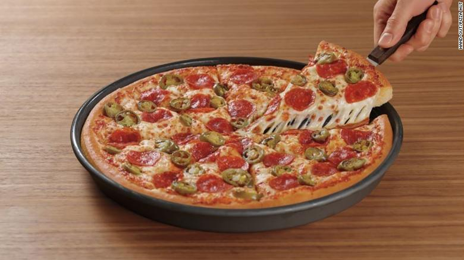
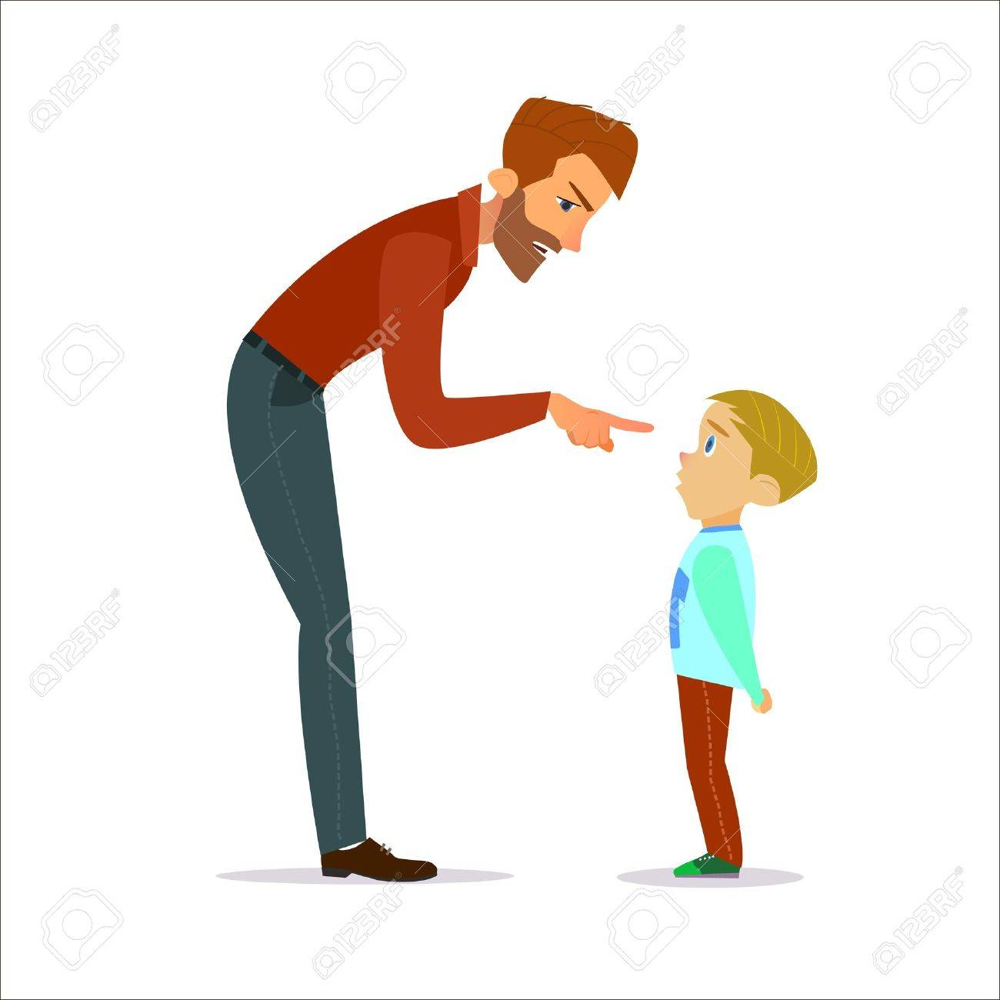

PRESENT SIMPLE
| ESTRUCTURA AFIRMATIVA | ||
| SUJETO + VERBO INFINITIVO | ||
| I work in a factory. | They love opera. | |
| Trabajo en una fábrica. | Les encanta la ópera. | |
| ESTRUCTURA NEGATIVA | ||
| SUJETO + VERBO AUXILIAR (TO DO) + AUXILIAR NEGATIVO (NOT) + VERBO INFINITIVO | ||
| I don't like pizza. | They do not learn. | |
| No me gusta la pizza. | Ellos no aprenden. | |
|  |  | |
| ESTRUCTURA INTERROGATIVA | ||
| VERBO AUXILIAR (TO DO) + SUJETO + VERBO INFINITIVO? | ||
| Do children like animals?. | Does the festival start tomorrow?. | |
| ¿Les gusta a los niños los animales? | ¿Empieza el festival mañana? | |
|
||
 |